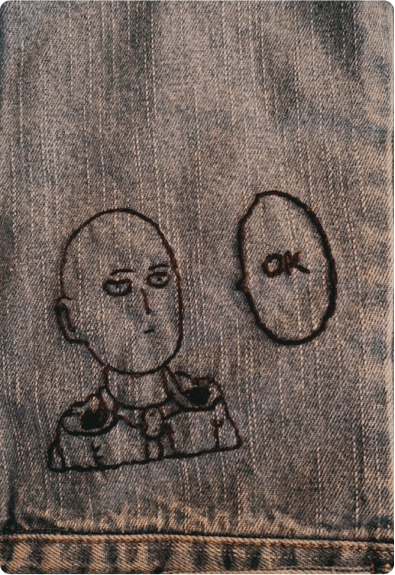
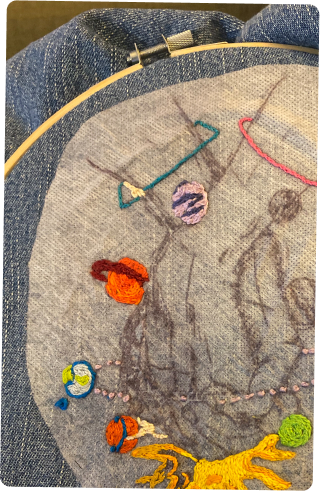
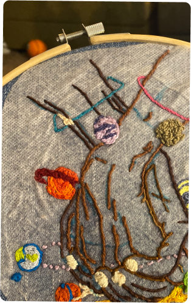
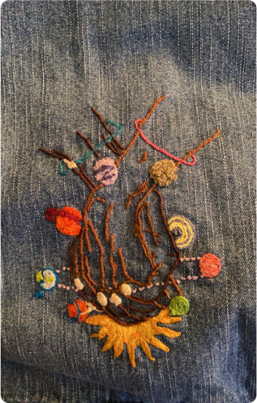
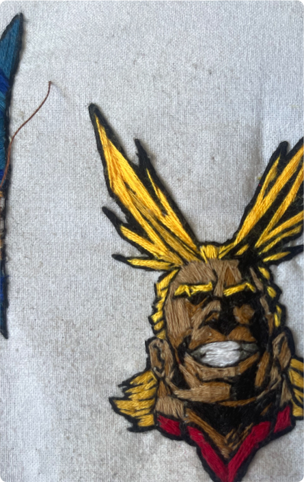
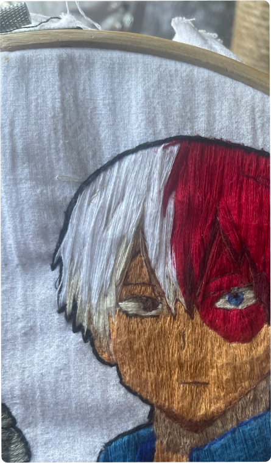
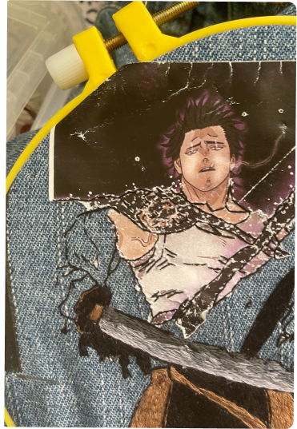
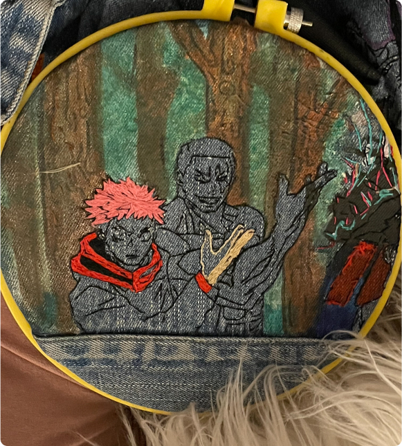
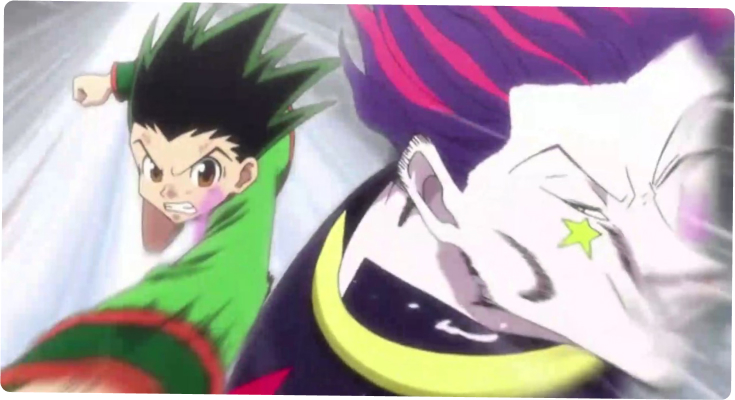
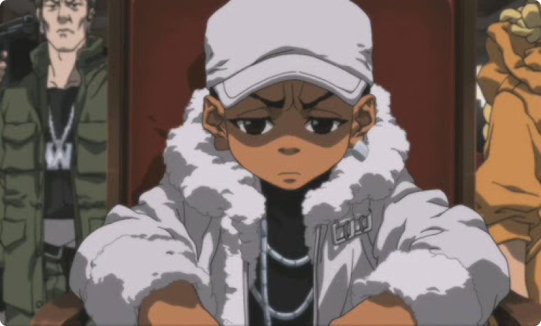

Welcome
to the embroidery portfolio of
The Beginning
One of my favorite things to do in my spare time to help keep me sane is hand embroidery. I stumbled across this hobby randomly when I saw one of my favorite artist - SMOOD - complete a piece. I figured I would give it a try and never stopped. It’s been four years since then.
Phase one

Saitama, from One Punch Man, is one of my favorite characters and I knew I wanted to make a patch of him. So, I went to a thrift store and found a jean jacket that was in really good shape and could handle the stress of a patch. I kept the design simple with just an outline of Saitama. Once complete I was overwhelming proud of the finished piece. It was from there that I then continued with simple outlines to grow my confidence in this new medium.
Phase two
After a while of just creating small, simple outlines, I was ready to push myself forward. So, I decided to create my first big piece. It was an artwork that I really connected to. It took around 20 hours to complete and I tried several different stitches to really see if I could push myself.
However, once complete this piece was short lived and was only on the jacket for maybe a few months before I removed it. I felt that it had lived its course and was ready to let it go. But it lives on through photos and the scars left behind on my fingertips. I will forever be grateful for the lessons learned during this project.



Phase three


After completing such a big project and a few others I was finally ready to try a new challenge. My next two major adventures were from the anime My Hero Academia. I decided to do All Might and Shoto for 2 reasons:
- They were some of my favorite characters
- They had heavy shading
At a glance, Shoto seems simple, but I very quickly learned that I lose interest in a project when I have to do the same color for a long time due to the large surface area. Shoto is about the size of my hand and in the embroidery world that is a big patch. However, I powered through the boredom, and it took about 16 hours over the course of 2 months.
All Might was a different story. I decided to do his hero form that has aggressive shading. But this patch is a little smaller than the palm of my hand and left little room for all the different shading colors. This one took about 18 hours since I had to move at a smaller pace to make sure the colors stayed in their respective areas.


The Future
For the future, I really want to try recreating some of my favorite scenes that left a memorable mark.
After that I hope to keep building my skill and maybe produce layered embroidery the require multiple hoops (I’ve seen some work the even moves!.......I could only imagine creating something that wild. But keep hope alive!!).

